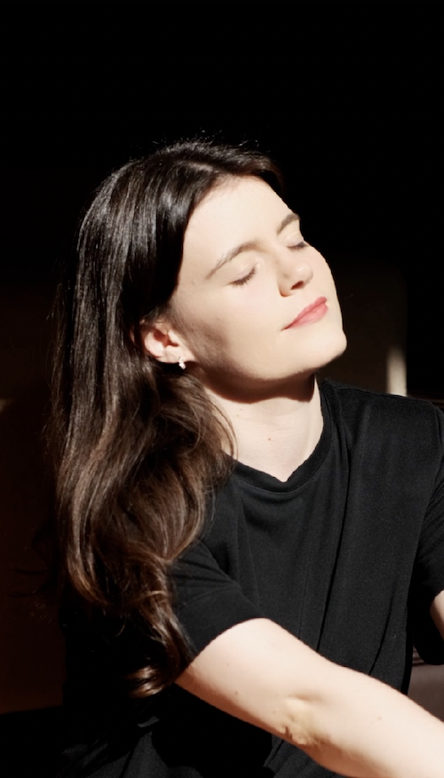

Intuitive Reading
A Reading made with intuition and method, about the moment you are living and the theme you bring.
Who are you when you stop being what the world expects of you?
There is a way of moving through life that is uniquely yours.
It doesn’t only show in your rhythm or your energy. It shows in the patterns you repeat, the choices you make, the relationships you build, the way you work and rest, and how you position and express yourself in the world.
Perhaps you also recognize it in a way that is harder to explain: in a dream that stays with you, an image that moves you, or a feeling you can’t yet put into words.
There are stories that repeat throughout your life. In the way you relate to others. In the decisions you make. In the challenges you meet and the way you respond to them.
Over time, you absorbed beliefs, references and ways of functioning that made you see life through a particular set of lenses.
About love. About worth, security, success, freedom, expression…
And without realizing it, you began to move between your truth and what you believe the world expects of you, and you are more than those stories and the ways you found to adapt.
The Intuitive Reading is an invitation to come back to your center: to see the patterns, beliefs and dynamics of this moment in your life and how they influence you. When you see what is at work behind your choices, you gain more room to choose differently, with more awareness.
What you believe about yourself shapes your choices more than you imagine!
Come discover new layers of yourself, if you feel that…
- ✦You want to know more of yourself, in your freest essence
- ✦You recognize something in dreams, symbols and signs in your life
- ✦There are challenges that keep repeating, and you want to understand the pattern behind them
- ✦You want to build your life with more awareness, confidence and ease
- ✦You are going through a transition and looking for clarity about your process
- ✦You want to make aligned decisions without getting lost in the noise of the mind
Meet your guide(come and get to know me first)
“Never doubt the information you receive. Besides being so accurate, your voice brings a calm, a tranquility, a peace…
A fellow student from my training, right after receiving a Reading
It’s something truly beautiful!”
What people who have received a Reading from me say
✦ The most recent Reading · audio testimonial
“It clicked exactly where it needed to click. It brought different perspectives to my reality.”
A friend and client of many years, whose story I know well. That is exactly why I was curious to see what the Reading would bring her.
Read the full testimonial
“So, my dear, look, I really liked it, I’d already told you, I really liked the Reading! Even though you said you weren’t so comfortable, that at some point you thought I might feel you were repeating what you already knew about my story. I think that also has a lot to do with the fact that you know so much of my story and we talk so much about what’s going on, which isn’t really the situation you have with all your clients.
Going back to the Reading and what I felt from it, I liked it very, very much. In fact, the conversation we had after the Reading showed exactly that: it clicked exactly where it needed to click.
It brought different perspectives to my reality. There were also things you brought, I’m thinking of the story that stayed between us, which you brought but didn’t quite understand the meaning of, and for me the meaning was very clear, just like that other image. So you brought those things and I was able to give them meaning within my own reality.
Of course I couldn’t listen to the Reading the way it “should” be done, because I listened in little bits, and the advice you give your clients is really to take a moment for themselves and truly connect with the Reading.
Whether because I’m somewhat used to it, or because I can really connect with a different kind of ease, I listened to the Reading while making dinner, then, when I put the kids to bed, I put my headphones on and listened to the rest, and throughout I kept messaging you, going deeper into what I was hearing. I paused many times and we had these exchanges, which really isn’t how the Reading is meant to be listened to.
Anyway, I managed, so much so that insights are still coming, even though I haven’t yet listened to the Reading a second time, alone and calm, because I haven’t been able to yet. But the messages stayed and kept reverberating, and I know that when I go back a second time I’ll get more, I’ll take other things from it.”


Swipe sideways →
These testimonials come from my Aura Readings, which came before this format and in which I intuitively read the person’s moment. The Intuitive Reading grows out of that same sensitivity and is now grounded in your birth chart, through the lens of Astrology, Alchemy and the Archetypes, which adds new layers of understanding and opens the door to reflection and deeper exploration you can build on from there.
What the Intuitive Reading is
It is an intuitive, in-depth look at your birth chart, guided by the theme you bring. I don’t hand you a list of signs and planets: I explore the relationships between the symbols in your chart to open up questions about your patterns, your beliefs and the possibilities you want to give more room to.
a starting point
The chart as a starting point
The chart is not a verdict. What interests me is the conversation between its elements: the desires, the tensions and the possibilities that can find expression in your life.
A story that is yours alone
As a complement to the Reading, the themes we explore take shape in a personalized symbolic story. A story connects what a list keeps apart. Its images and characters give form to desires, conflicts and possibilities, offering you a visualization you can return to whenever you want to explore what you recognize in yourself.
In my voice
I record the Reading for you. The tone, the rhythm and the pauses are part of how I give expression to what I interpret and share with you. You can listen in your own time, pause, replay and return to the passages that move you. You don’t need to understand everything at once.
From understanding to practice
After the story, we move to the concrete: where you might recognize these dynamics, which questions are worth asking and what you could try doing differently. Not just “What does my chart say about me?” but “How can I work with what I recognize in it?”
Not to tell you who you are. To offer you a perspective in which you can recognize yourself, ask questions and choose.
Curious to see your own birth chart? Enter your details and see it drawn in gold.
✦ See my birth chartAnd then, what do I do with this information?
It isn’t about information, it’s about transformation, awareness and belief-work proposals you can explore through this symbolic language (and others in the sessions, if you want to go deeper).
Knowing that your Sun is in Capricorn may spark your curiosity, but how can that help you understand your relationship with work, responsibility and success?
For example: what makes you feel fulfilled, how you handle pressure, and what you need to recognize the value of what you do? The Reading moves from the symbolic language of the archetypes of the signs and planets to questions and experiments you can carry into your everyday life.
Choose an example:
How does this show up in my communication?
If the theme is difficulty expressing your needs, we can explore which conversations it happens in. One possible experiment: preparing a specific request instead of waiting for the other person to guess what you need.
What can I try in my relationships?
If you recognize a tendency to take everything on, you can notice when you step in before the other person does. One possible experiment: agreeing on a responsibility explicitly and telling apart what is yours to carry from what belongs to the other person.
How do I bring this into my work and my time?
If a link between self-worth and productivity comes up, you can notice what you think when you rest. One possible experiment: setting a concrete limit on your availability and noticing the reaction it stirs in you.
These are just examples. Your Reading is guided by your theme and the context you share.
What you receive
- A personalized Reading of your birth chart, guided by what you are living right now
- A symbolic story connected to your moment, created from your chart and your theme
- Connections between the themes in your chart and what you share as a starting point
- Questions to help you recognize how a pattern shows up in specific situations
- Guidance and practical experiments for your everyday life, based on the beliefs that come up in the Reading
- Suggested daily practices and ways to bring the awareness of your chart into your own dynamics
- The Reading in audio, recorded by me, for you to listen to as many times as you like
Meet your guide
I’m Filipa Osório

I have an academic background and professional experience in management and strategy, and for several years I have also devoted myself to studying human behavior, beliefs and the patterns that drive us without our noticing.
I studied education and child development and specialized in therapies such as Family Constellations, Aura Reading, ThetaHealing®, innerdance, dream analysis, astrology, alchemy, Human Design and much more. From all of this, I created my own methodology.
I use intuition, symbolic language and analysis as parts of the same way of seeing: sensitivity to what has not yet been said, and clarity to turn it into reflections you can use in your everyday life. My study of the unconscious, the archetypes and alchemy is part of that path.
I don’t separate the analytical side from the intuitive one. The Reading is shaped by both.
A little of me through the eyes of astrology
I like to imagine my chart as an alchemical workshop: a place where fire meets matter, questions meet images, and what doesn’t yet have a name slowly begins to take shape.
My Moon in Aries holds the flame of someone who wants to discover things for herself, feel life up close and open new paths. Mercury and Venus in Sagittarius carry that flame further: they are the traveler and the storyteller, looking for meaning, beauty and connections between worlds that seemed apart.
My Sun in Capricorn, next to Mars, gives hands to that imagination. It is the builder in the workshop: it chooses the materials, listens to time and looks for a form that can hold what was born as a possibility. Not to erase the mystery, but to give it a place in life.
With my Ascendant in Aquarius, I like to open windows where there seemed to be only walls. To look from another angle, question a familiar explanation, bring together ideas that hadn’t yet talked to each other. And the cluster of planets in the 11th House reminds me that this discovery doesn’t need to stay with me alone: it can meet other people and become exchange, belonging and shared creation.
Maybe that is why the language of symbols fascinates me so much. An image can hold a question; a character can give a face to a conflict; two points, when they come close, can reveal a story we hadn’t been able to see.
It is from this meeting between imagination and discernment that I try to do my Readings: give language to what you recognize, shed light on connections and find a passage into concrete life.
In my chart, I find the storyteller, the explorer and the builder working in the same workshop. Mercury and Venus in Sagittarius look for meaning and words; Neptune offers me an image for my relationship with mystery; Capricorn and Saturn remind me to take care of form, of limits and of what I can sustain.
In Human Design, I am a Manifesting Generator, with emotional authority and a 3/5 profile. My energy comes alive when something truly excites me, my decisions ask for time so the emotional wave can settle, and I learn by experimenting, so I can then share what I’ve discovered.
My chart doesn’t contain all of me. But it offers me images to keep discovering who I am, and it is with that same curiosity that I approach yours.
What theme would you like to bring?
A few examples of themes you can write about in the form after your purchase.
If more than one resonated with you, feel free to share your moment with me as it is.
You don’t need to separate what, in your experience, is connected. When you book, you’ll have the chance to tell me more.
How it works
You choose your option
The Intuitive Reading on its own, or the Reading plus an in-depth session with me after you’ve listened to it.
You share your details and your theme
Date, time and place of birth, what you are going through and any context you feel is important.
I prepare and record your Reading
With intuition and an archetypal look at your chart, connecting the Reading to questions and practical guidance.
You receive your Reading
In audio, within 14 business days of payment confirmation.
You listen and integrate
In your own time, as many times as you like.
You can take notes on your reflections and bring specific examples.
In-depth session
We go deeper into the themes, work on the relevant beliefs and explore ways of responding to real situations.
To go deeper
In-depth session and belief work
After listening to your Reading, you may feel like going deeper into some of the themes you recognized.
In this one-to-one session, you bring whatever came up: questions, reflections or specific examples from your life. You don’t need to prepare anything or arrive with a neatly organized explanation.
Starting from what you share, I help you explore the connections between what you feel, the beliefs that may be present and the way you respond to situations. When it makes sense, we work on those beliefs through the practices I bring into my work with clients. If you like, we can also go deeper into your Human Design chart.
We don’t stop at understanding the pattern. We also explore what you would like to live differently and which steps you can try in your communication, your relationships or the choices ahead of you.
The Reading opens up perspectives and reflections. The session lets you go deeper and work on the questions that come up, through belief work in my own unique methodology.
Choose your Reading
Intuitive Reading
147€
- A Reading of your birth chart, guided by your theme
- A personalized symbolic story
- Questions and practical guidance
- Audio recorded by me, to listen to in your own time
Reading + in-depth session
247€
- Everything included in the Intuitive Reading
- A one-to-one session with me, after you’ve listened to the Reading
- You bring your reflections and real-life examples
- We go deeper into the themes and work on the relevant beliefs
- If you like, we also go deeper into your Human Design
Do you have a birthday coming up? There is an option with the Solar Return
For your birthday
Intuitive Reading + Solar Return · 247€
Ideal if your birthday was recently or is coming up soon: the start of a new trip around the Sun, a new yearly cycle in your life. In astrology, this moment is called the Solar Return, and it lets us explore the themes that may come to the fore between this birthday and the next.
I want the Reading with the Solar ReturnQuestions before you choose
14 questions
Do I need to know astrology?
No. You don’t need to know any technical language or follow the chart drawing. The Reading is presented in an accessible way, with links to everyday life.
Do I have to choose a specific theme?
You don’t have to choose a category or arrive with a perfect question. You can tell me what you are going through, what is unsettling you and what you feel you need to understand. If several themes are connected, you can share them together. From there, we agree on the focus of the Reading.
What if I don’t know my birth time?
Talk to me before you buy. The time affects important elements of the chart, so we need to see what can be explored with the details you have and what the limitations will be.
How do I receive the Reading?
You receive your personalized Reading in audio, so you can listen in your own time, pause and return to the passages that move you.
Is there a live session?
The base Reading is recorded and does not include a live meeting. If you choose Intuitive Reading + in-depth session, you also get a one-to-one session with me after listening to the Reading, so we can go deeper into the themes based on your reflections and real-life examples.
What happens in the in-depth session?
We start from what you recognized in the Reading and what you want to bring from your life. We explore patterns, possible beliefs and ways of responding to situations. When it makes sense, I bring in belief-work practices, and together we shape next steps you can try.
Do I need to prepare anything for the session?
You can take notes and bring questions or examples, but you don’t have to. Just share what stayed with you or what you would like to explore further.
How long does it take to arrive?
Up to 14 business days after payment confirmation.
Is the story the Reading?
No. The Reading of your chart, guided by what you share, is the main deliverable. The symbolic story is a complement that gathers some of the dynamics explored into images and characters you can return to. It is neither a biography nor a prediction.
Do I have to agree with everything I hear?
No. You may recognize yourself, disagree or give an image a different meaning. Your experience is essential to understanding what makes sense. You don’t need to fit yourself to the interpretation.
Will the Reading tell me what to do?
It offers perspectives, questions and practical suggestions, not decisions made for you. You can explore what you hear and choose what you would like to try.
Is it a prediction of the future?
That is not the purpose of this Reading. The chart is used as a symbolic language to explore the questions you bring, not to determine events or guarantee outcomes.
Does this experience replace psychological support?
No. The Reading is a spiritual and interpretive practice of self-knowledge. The in-depth session goes deeper into the themes and into belief work, but it is not presented here as psychotherapy and does not replace medical or psychological care.
Can I get a Solar Return Reading afterward?
You can work with me again through a Solar Return Reading, dedicated to the symbolic exploration of your yearly cycle in relation to your birth chart and the moment you are living. It’s ideal for your birthday (your trip around the Sun).
If this is the Reading you were looking for
The Reading may open up questions and bring to awareness themes that, if it feels right for you, we can explore further together in individual self-knowledge and personal (and professional) development work, contracted separately.
The way you see yourself shapes the life you build, and none of those stories is final. Let’s look at your chart and your moment together, with depth and lightness.
Choose my ReadingThe chart is used as a symbolic language for reflection, not as a diagnosis or a fixed definition of who you are, but it opens the door for us to work together in sessions. This Reading is not a prediction of events, and it does not replace medical, psychological or other professional advice.